A fracture is a break in a bone. In cattle, fractures of the limbs are common — caused by slipping on wet floors, falling into ditches, road accidents, getting a leg caught in a gate or rope, or fighting in the herd. Because a cow is a heavy animal that must stand to eat, ruminate and be milked, a broken leg is a serious emergency that needs quick, skilled treatment.
This guide covers the types of fractures seen in cattle, how they are diagnosed, field first aid, casting and splinting, the Thomas splint, external fixation, surgical repair, postoperative care and rehabilitation — for veterinary students, veterinarians, farmers and breeders.
Important: All surgical procedures must be performed by a qualified veterinarian under proper anaesthesia and aseptic conditions. Never attempt to set a fracture yourself — wrong handling can turn a treatable fracture into a hopeless one.
Types of Fractures in Cattle
Fractures are classified by the state of the skin, the completeness of the break, and the shape of the fracture line. The type decides the treatment and the prognosis.
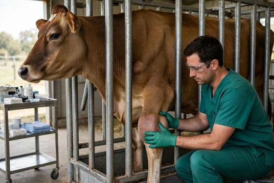
Clinical examination — swelling, pain and deformity point to a fracture
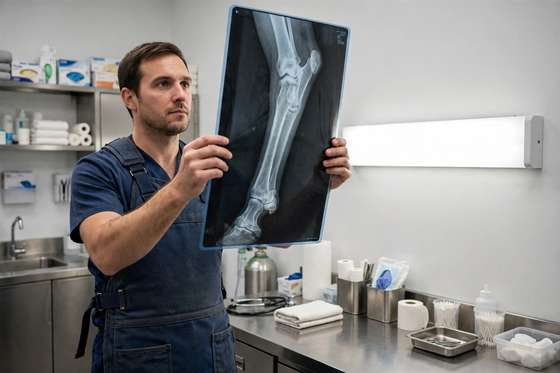
X-ray confirms the type and position of the fracture
1
Closed (simple) fracture(The skin over the break is intact — the best prognosis, lowest infection risk)
2
Open (compound) fracture(The bone has pierced the skin or a wound reaches the bone — high infection risk, needs urgent surgery)
3
Complete fracture(The bone is broken right through into two or more pieces)
4
Incomplete / greenstick fracture(The bone is cracked but not broken through — common in young calves)
5
Transverse, oblique and spiral fractures(Named by the shape of the break — transverse breaks heal most easily; spiral breaks come from twisting injuries)
6
Comminuted fracture(The bone is shattered into several fragments — difficult to fix, guarded prognosis)
Common sites: metacarpus and metatarsus (cannon bones) are the most frequently fractured bones in cattle, followed by the tibia, radius and ulna. Fractures of the humerus, femur and pelvis are less common and very difficult to immobilise in a standing adult cow.
Clinical signs of a fracture: sudden severe lameness with no weight on the leg, swelling around the break, visible deformity or abnormal bending, pain when the leg is touched, crepitus (a grating sound or feeling when the broken ends move), and a dangling or shortened limb.
Pathogenesis
A fracture occurs when a force applied to a bone — a fall, a kick, a slip on a hard floor, or a leg caught in a gap — exceeds the strength of the bone. In young calves the growing bone may crack without breaking right through (greenstick fracture), while in adult cattle the bone usually breaks completely. Bones weakened by poor mineral nutrition or long-standing infection break under smaller forces.
At the moment of the break, blood vessels inside the bone and the surrounding soft tissues tear, and blood collects around the fracture as a haematoma. Inflammation follows, and over the following days and weeks the haematoma is replaced by soft callus, then by hard bony callus, which is slowly remodelled into normal bone. Healing needs the broken ends to be held still, a good blood supply and adequate nutrition. If the skin is broken (open fracture), bacteria reach the bone and can cause infection of the bone (osteomyelitis), which greatly worsens the prognosis.
Diagnosis — Examination and X-Ray
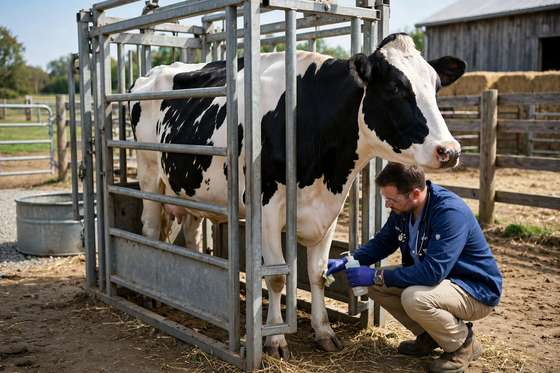
Safe restraint in a crush — essential before any examination of a painful leg
Accurate diagnosis decides whether the animal can be treated and which method will work. The veterinarian first takes a history — how the injury happened and how long ago — then examines the animal, ideally restrained in a crush so the painful leg can be handled safely.
Clinical examination: the vet checks for swelling, deformity, heat and pain, and gently feels for crepitus and abnormal movement. The whole animal is checked too — a fracture may not be the only injury.
Radiography (X-ray): two views of the broken bone confirm the diagnosis and show the exact fracture type, the number of fragments and how far the ends are displaced. This is the basis for choosing a cast, splint, external fixator or internal fixation.
Assessing treatability: the vet weighs the bone involved, open versus closed fracture, the animal's weight, age and temperament, and the cost of treatment against the animal's value. An honest prognosis must be given before treatment begins.
Differential Diagnosis
Sudden lameness and a swollen leg are not always a fracture:
Soft-tissue injury (sprain or bruising) — pain and swelling without deformity, crepitus or abnormal movement; the animal usually bears some weight.
Foot rot and foot abscess — severe lameness with swelling and pain localised to the foot, not the long bones.
Septic arthritis (joint infection) — a hot, swollen, very painful joint with fever; the joint, not the bone shaft, is the problem.
Downer cow syndrome — a cow that cannot stand after calving, usually from nerve or muscle damage rather than a broken bone.
First Aid in the Field — What to Do Before the Vet Arrives
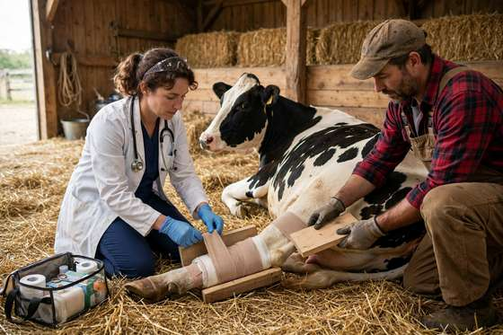
Emergency splinting — padded boards and bandages stop the broken ends moving
Good first aid prevents a simple fracture becoming an open one and reduces pain and shock. Speed matters, but calm, gentle handling matters more.
1
Keep the animal calm and still(Do not force a cow with a broken leg to walk — movement grinds the broken ends and damages muscle, nerves and blood vessels)
2
Control any bleeding(Press a clean cloth firmly over an open wound; do not apply a tight tourniquet to the leg)
3
Immobilise the leg(Pad the leg with cotton or cloth, then tie a light splint — wooden boards or a PVC gutter — above and below the break, firm but not tight)
4
Do not try to set the bone(Pulling or straightening a broken leg without anaesthesia causes severe pain and more damage — leave reduction to the veterinarian)
5
Call the veterinarian immediately(Fractures treated within the first few hours have the best results; delay allows swelling and muscle spasm to make reduction much harder)
6
Move the animal gently(Slide the animal onto a trailer or sledge if it must be moved; provide soft bedding and keep it warm and quiet)
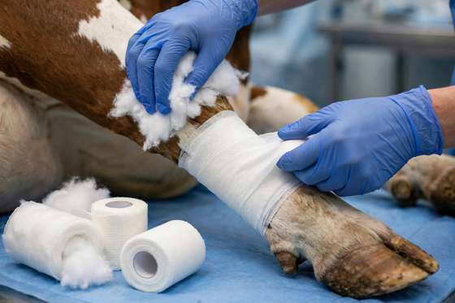
Thick cotton padding under every bandage — it prevents pressure sores
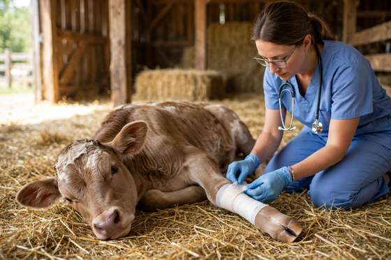
Calves heal fastest — treat a calf fracture early and it often recovers fully
Casting, Splinting and External Fixation
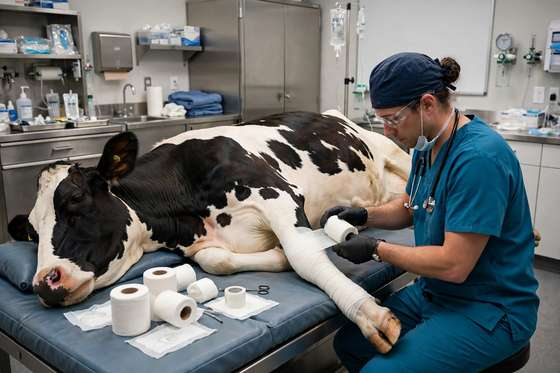
Applying a fibreglass cast — strong, light and waterproof
Most lower-limb fractures in cattle are treated without open surgery. The broken ends are aligned (reduced) under sedation or anaesthesia, then held still until the bone heals. The three main methods are the cast, the Thomas splint and the external fixator.
Plaster and Fibreglass Casts
The leg is padded with a thick layer of cotton, then wrapped with plaster of Paris or fibreglass casting bandage. The cast must cover the joints above and below the fracture. Fibreglass casts are lighter and stronger than plaster and are now preferred for adult cattle. The animal should be able to bear some weight on the cast within a day or two.
The Thomas Splint
The Thomas splint is a metal frame with a padded ring at the top, two side bars and a foot plate. The ring presses against the groin (hind leg) or axilla (front leg) and carries the animal's weight, so the broken bone is protected from loading. The leg is bandaged to the frame, and the animal can stand and walk on the splint. It is cheap, strong and very widely used in cattle practice in Asia and Africa.
External Fixation
In external fixation, metal pins are drilled through the bone above and below the fracture and joined outside the skin by connecting bars and clamps. The frame holds the fragments rigidly in place and can be adjusted during healing. It is used for open fractures, comminuted fractures and fractures that cannot be held by a cast alone. Pin sites must be cleaned regularly to prevent infection.
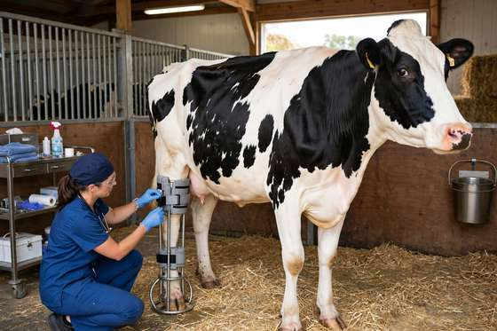
Thomas splint — the padded ring carries the weight, not the broken bone
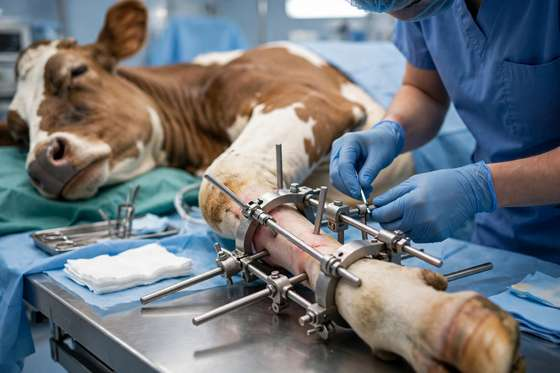
External fixator — pins through the bone, joined by bars outside the skin
Thomas Splint vs External Fixator — Labelled Diagram
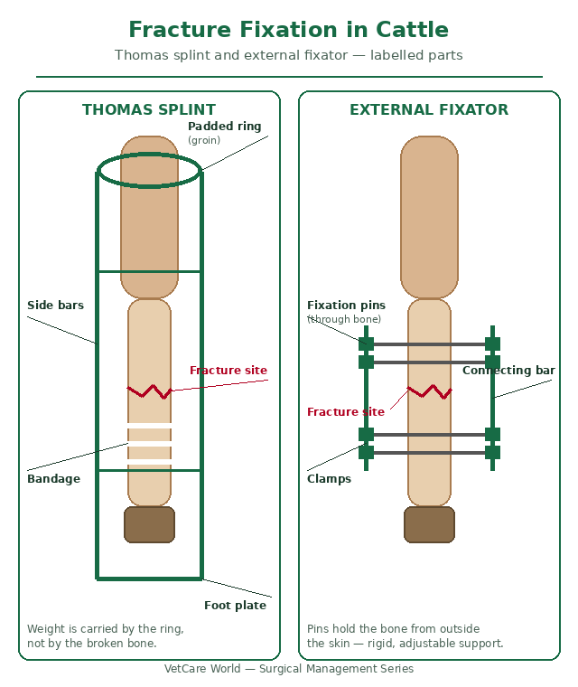
Thomas splint (left) and external fixator (right) — labelled parts
Both methods keep the broken bone still while it heals, but they work differently. The Thomas splint takes the animal's weight through its padded ring, while the external fixator grips the bone itself with pins. The veterinarian chooses based on the fracture type, the bone involved, the animal's size and the facilities available.
Surgical Repair — Internal Fixation
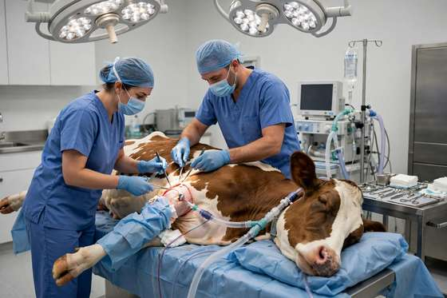
Internal fixation — plates, screws or pins placed under general anaesthesia
Some fractures cannot be held by a cast or external frame and need open surgery. Under general anaesthesia and strict aseptic conditions, the surgeon opens the fracture site, aligns the fragments and fixes them with bone plates and screws, an intramedullary pin, or a combination of both. Internal fixation gives the most rigid repair and allows early weight-bearing, but it needs a well-equipped theatre, good anaesthesia and careful aftercare, and it is expensive. Open fractures also need thorough wound cleaning (debridement) and flushing before fixation.
Important: All surgical procedures must be performed by a qualified veterinarian under proper anaesthesia and aseptic conditions. Fracture surgery on a 400–600 kg animal carries real risks — for the animal and for the surgical team — and must never be attempted without proper facilities and restraint.
Postoperative Care, Complications and Rehabilitation
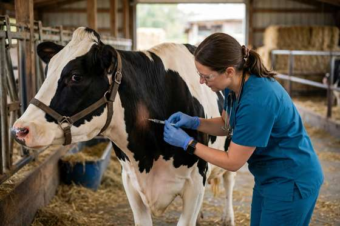
Pain relief and antibiotics — only as prescribed by the veterinarian
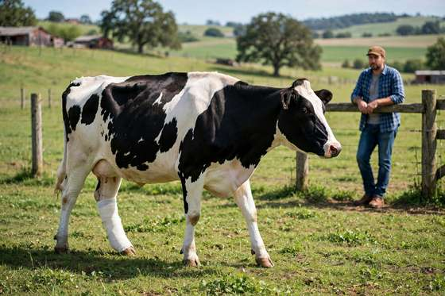
Rehabilitation — short, gentle walks on soft, level ground
Postoperative Care
Pain relief: anti-inflammatory medicine as prescribed by the veterinarian, for the first few days at least — a cow in pain will not eat, stand or heal well.
Antibiotics: given as prescribed by the veterinarian, especially for open fractures and surgical repairs, to prevent bone infection.
Cast and splint checks: inspect daily for swelling above or below the cast, slipping, chewing, bad smell or discharge. A cast that becomes loose or tight must be changed by the vet.
Pin-site care: external fixator pins are cleaned regularly with antiseptic solution as advised by the veterinarian.
Housing: a small, clean, dry pen with deep soft bedding, feed and water within easy reach, and a non-slip floor. Isolate the animal from the herd to prevent pushing and fighting.
Complications to Watch For
Infection (osteomyelitis): infection of the bone, especially after open fractures — shows as fever, discharge and failure to heal.
Non-union or delayed union: the bone fails to join, often because of movement at the fracture site, infection or poor blood supply.
Malunion: the bone heals in the wrong position, leaving a bent leg and permanent lameness.
Pressure sores: from a tight cast or prolonged lying — check the cast and bedding daily.
Laminitis in the opposite limb: overloading the good leg can cause painful hoof disease — the most common reason a recovering cow is lost.
Rehabilitation
Once the veterinarian confirms healing by X-ray, the cast or fixator is removed and the cow is given short, gentle walks on soft, level ground, increasing gradually. Full return to the herd and normal work takes several more weeks. Heavy animals and high-yielding dairy cows need extra time before they return to full production.
⚠ Important Tips:
Never let a cast get wet — wet bedding and mud soften plaster and cause skin infection.
Swelling above or below the cast, a bad smell, or the cow refusing to stand are warning signs — call the vet at once.
Keep the recovering cow separate from the herd until the vet clears her for return.
Feed a balanced ration with adequate calcium, phosphorus and protein — healing bone needs minerals.
Record the dates of casting, X-ray checks and cast removal in the animal's health record.
Prevention of Fractures
Most fractures in cattle are preventable. Keep floors dry and non-slip, repair broken gates, steps and cattle grids, and never rush or frighten animals through narrow passages. Provide enough space at feed and water points to reduce pushing and fighting, handle animals quietly, and load and transport them with care. A balanced mineral ration keeps bones strong — calcium and phosphorus deficiency weakens bone, especially in high-yielding dairy cows. Check yards and tracks regularly for holes, slippery patches and loose objects that can trap a leg.
Frequently Asked Questions
What are the most common fractures in cattle?
The most common fractures in cattle are of the long bones of the lower limbs — the metacarpus (front cannon bone) and metatarsus (hind cannon bone) — followed by the tibia, radius and ulna. Fractures of the upper limb bones (humerus and femur) and the pelvis are less common and carry a much poorer prognosis because they are hard to immobilise.
Can a cow recover from a broken leg?
Yes — many cattle recover well from fractures of the lower limb, especially calves and young, light animals treated early with a cast or splint. Recovery depends on the bone involved, whether the fracture is open or closed, the animal's weight and temperament, and the quality of aftercare. Fractures above the elbow or stifle, and open fractures with severe contamination, often have a poor prognosis.
How is a fracture diagnosed in cattle?
Diagnosis starts with a clinical examination: sudden non-weight-bearing lameness, swelling, deformity, pain on palpation and crepitus (a grating feeling) point to a fracture. Radiography (X-ray) confirms the diagnosis and shows the exact type, location and displacement of the fracture, which decides the treatment — cast, splint, external fixator or surgery.
What is a Thomas splint and how does it work?
A Thomas splint is a metal frame with a padded ring at the top that fits against the groin or axilla, two side bars running down the leg, and a foot plate at the bottom. The ring carries the animal's weight, so the broken bone is not loaded while it heals. It is widely used in cattle practice for fractures of the lower limb because it is strong, cheap and allows the animal to stand and walk.
How long does a fracture take to heal in cattle?
A simple fracture in a calf usually heals in 4 to 6 weeks; in an adult cow, 8 to 12 weeks is normal. Healing is checked by clinical examination and follow-up X-rays. The cast or fixator is removed only when the veterinarian confirms that a strong callus has formed and the bone can bear weight safely.
My cow is not putting weight on her leg — what should I do first?
Keep the cow calm and do not force her to walk. If the leg looks bent, swollen or dangling, it may be broken — call the veterinarian at once. Do not try to straighten the leg or give any medicine yourself. If the vet advises it, a padded temporary splint can be tied to stop the broken ends moving while you wait.
How do I look after a cow with a cast on her leg?
Keep the cast clean and dry — wet bedding and mud soften it. Check daily for swelling above or below the cast, bad smell, or the cow chewing at it, and call the vet if any of these appear. Keep the cow in a small, clean, dry pen with soft bedding, good feed and water close by, and do not let her walk on slippery or rough ground.
گائے کی ٹانگ ٹوٹ جائے تو کیا کریں؟
اگر گائے کی ٹانگ ٹوٹ جائے تو اسے فوراً پرسکون جگہ پر رکھیں اور چلنے پر مجبور نہ کریں۔ ٹانگ کو خود سیدھا کرنے کی کوشش نہ کریں۔ جلد از جلد جانوروں کے ڈاکٹر کو بلائیں۔ ڈاکٹر ایکسرے کے بعد پلاسٹر، تھامس اسپلنٹ یا ایکسٹرنل فکسیٹر لگائے گا۔ پلاسٹر کو خشک اور صاف رکھیں اور ڈاکٹر کی ہدایت کے مطابق دیکھ بھال کریں۔
Key Takeaway
A broken leg in cattle is a serious emergency, but many animals — especially calves and young stock with lower-limb fractures — recover fully with early treatment, a well-fitted cast, Thomas splint or external fixator, and careful aftercare. The keys are fast first aid, accurate X-ray diagnosis, correct immobilisation and daily checks during healing. Prevention — safe floors, calm handling and good mineral nutrition — is always cheaper than treatment. Follow current local veterinary authority guidance.